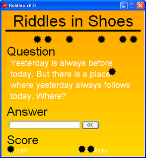

Ruby the Red Gem of Programming
This is an archived post This is an archived post
Previous
Index
Next
Riddles in Shoes
February 28 2009, 8:07 AM
by Victor Goff
Uploaded
Assignment 5: Riddles in Shoes
into
Shoes Tutorial Note
. This is one of the exercises of
Shoes course 3rd
.
# sample67.png

Have fun!
ashbb
30 views and 0 responses